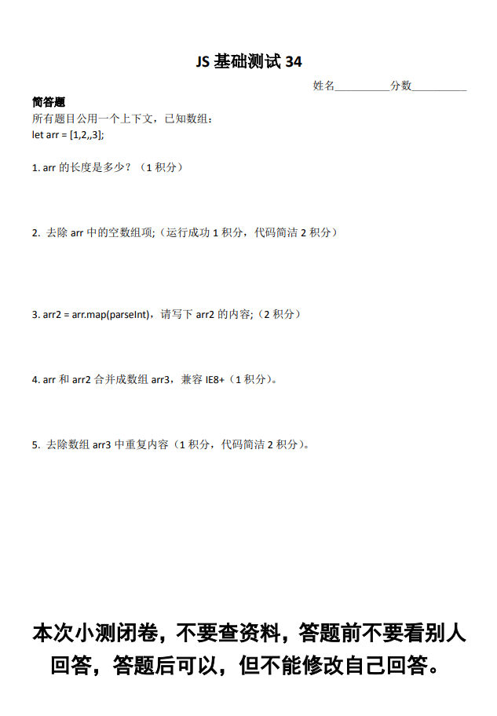

代码
题目

解答
答案
1. 第一题答对 1分
2. 数组空值不会被遍历，所以最简便的方法是：
arr = arr.filter(value => true)
3. parseInt(1, 0); // 1 radix为0自动转换成 10
答案为：[1, NaN, NaN]
4. 数组合并，兼容IE8+
arr3 = arr.concat(arr2)
5. set参数为一个可迭代对象
arr5 = [...new Set(arr3)]
总分：1分。。。
不及格
总结：对一些api还是记得不太清楚